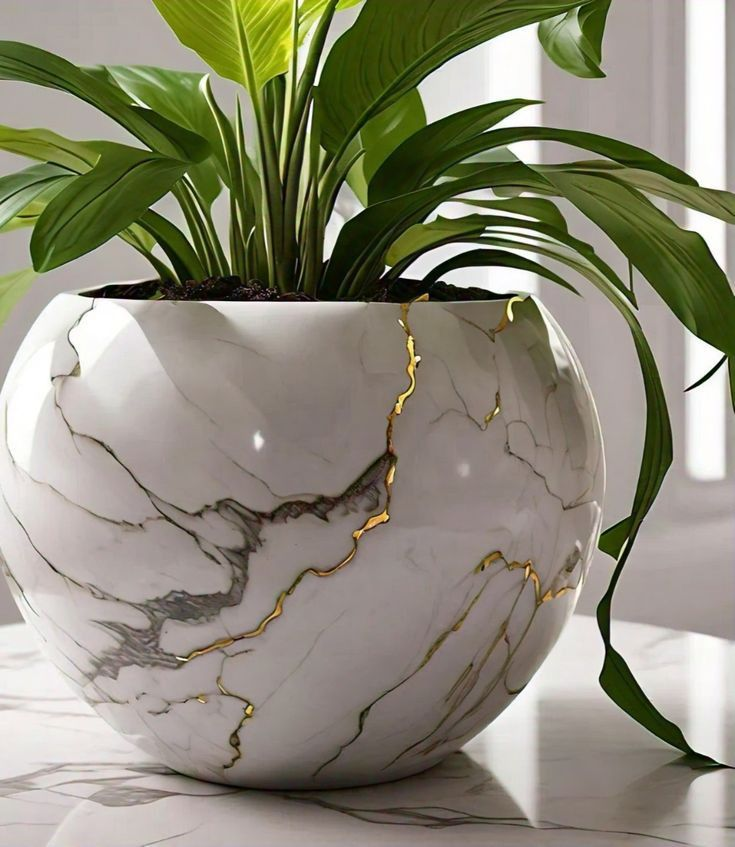

Welcome to Clay Station 7, your go-to destination for handcrafted decorative cement art. We are a family-owned business driven by creativity, passion, and a deep sense of purpose. Founded with a desire to bring custom art into people's homes, we've grown into a business that proudly serves over 30 loyal customers. Our unique creations add a personal touch to various special occasions, turning concrete into beautiful expressions of art. Clay Station 7 was born out of a deep passion for art, creativity, and the beauty of craftsmanship. Founded in 2022, our journey began with a simple mission: to transform cement, a material often associated with cold, industrial environments, into something that radiates warmth, artistry, and personality. From humble beginnings in a small studio, we have grown into a dedicated team of artisans who take pride in creating one-of-a-kind decorative pieces. Each item we craft is a testament to our commitment to quality, creativity, and the belief that art should be accessible to everyone.With each piece we create, our goal is to inspire, to beautify, and to share the story of what it means to create with purpose. We take pride in the relationships we've built with our customers and continue to strive for service and quality that exceed expectations.
About Clay Station 7
Our Story
The Creative Process
At Clay Station 7, every piece of art we create is meticulously handcrafted. Our creative process is driven by a blend of traditional techniques and modern innovations, ensuring that each item we produce is not just a product, but a work of art.
Step 1: Conceptualization
We start by understanding your vision. Whether it's a custom order or a new collection, we work closely with you to conceptualize the design, ensuring it aligns with your style and preferences.
Step 2: Crafting
Our artisans then bring the design to life, carefully shaping and molding the cement to create intricate patterns and forms. This stage requires patience, skill, and an eye for detail.
Step 3: Finishing Touches
Finally, we add the finishing touches, including painting, polishing, and sealing. This ensures that each piece not only looks stunning but is also durable and long-lasting.
Meet the Team
Alzira Dongua
Lead Designer and Founder
Alzira is the creative force behind Clay Station 7. With a passion for innovative design, she leads the team in crafting unique and personalized cement art pieces.
David Dongua
Logistics Manager
David ensures the smooth operation of Clay Station 7s supply chain and delivery services. With over 10 years of experience in logistics, he coordinates everything from sourcing eco-friendly cement materials to managing shipping timelines for custom orders. His organizational skills ensure that every piece arrives safely and on time.
Ebenezer Dongua
Visual Artist
Eben is the artistic mind behind the stunning visual presentation of Clay Station 7 s work. With a degree in graphic design and a passion for aesthetics, she is responsible for curating product photography, website visuals, and promotional materials that capture the unique beauty of each cement piece.
Augusta Dongua
Financial Manager
Augusta handles the financial operations of Clay Station 7, including budgeting, invoicing, and financial planning. Her expertise in small business finance ensures that Clay Station 7 remains profitable while offering competitive pricing to clients. Augusta s strategic approach has helped grow the business sustainably.